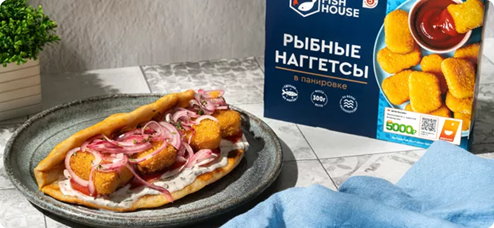
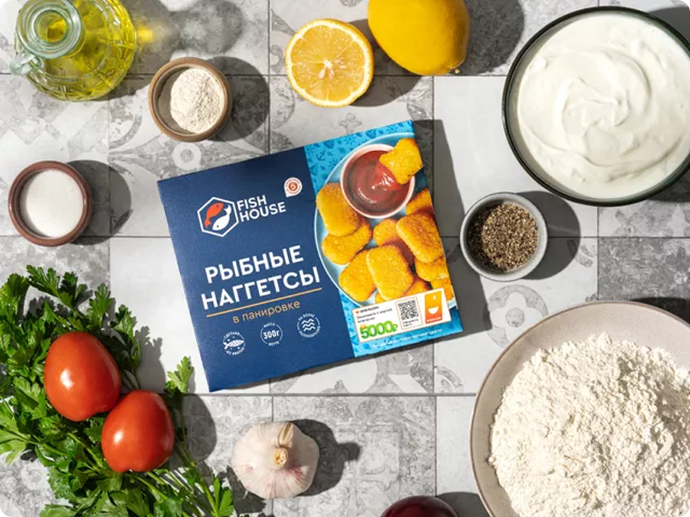
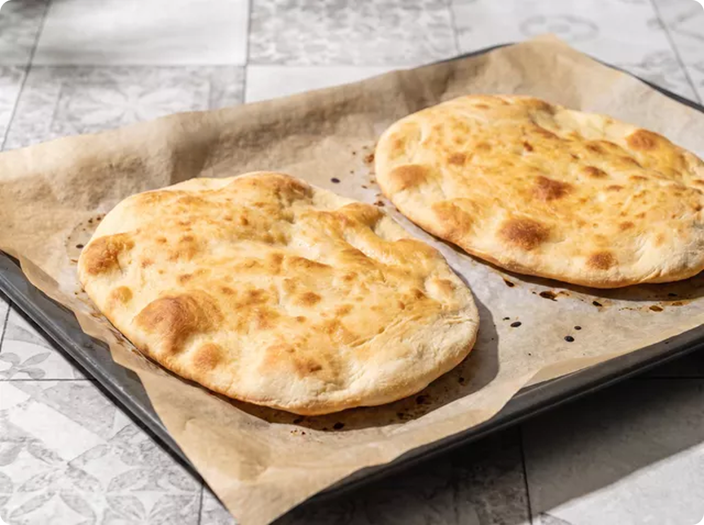
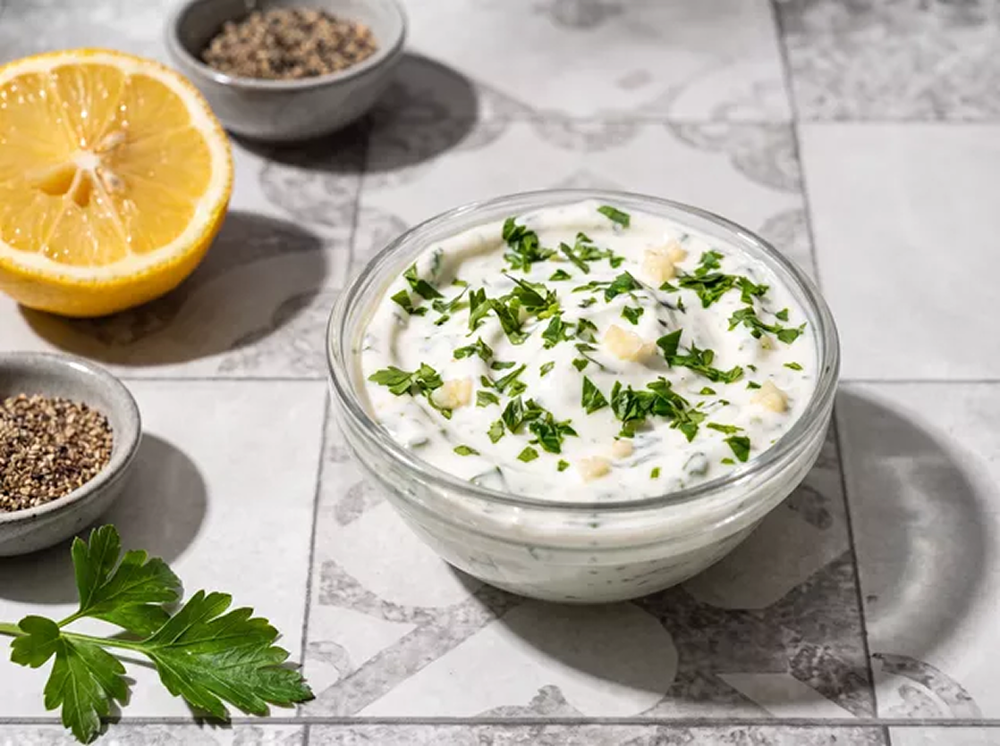
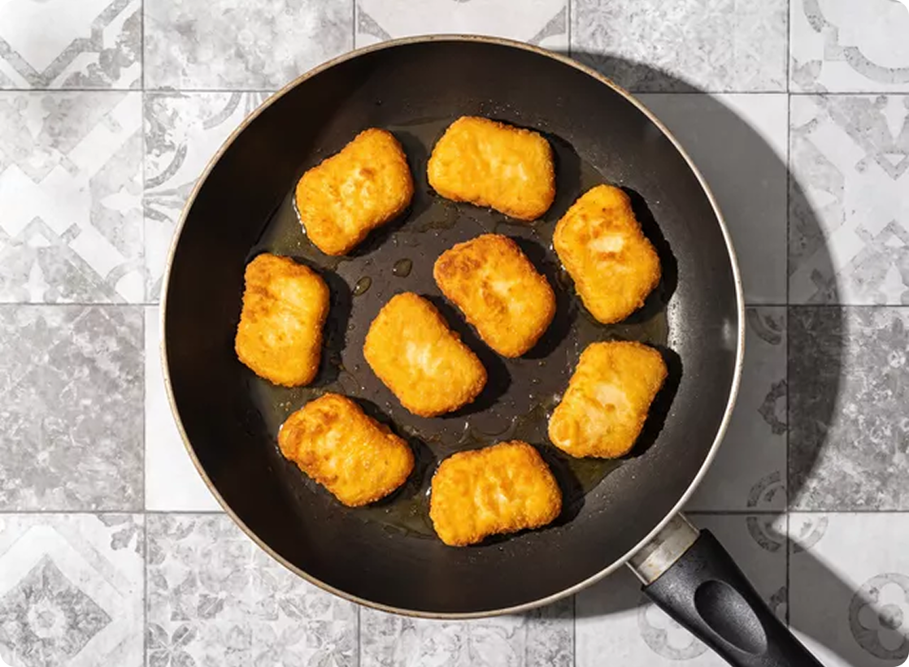
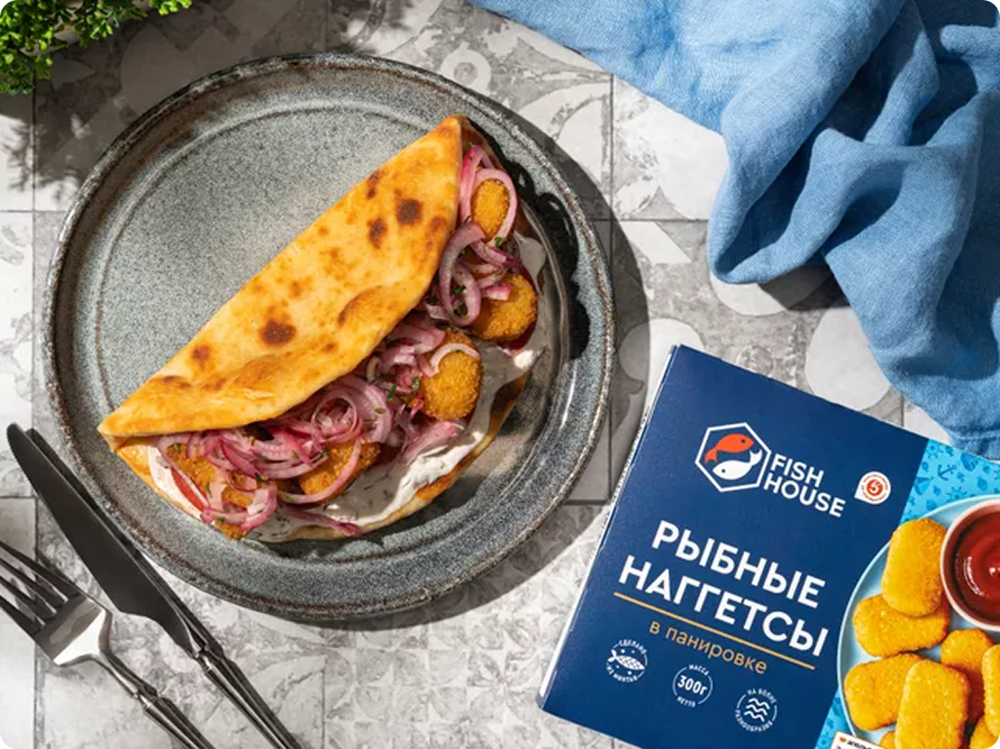

Вкусные рецеаты "Готовим вместе"

Домашние лепешки с наггетсами
Домашний обед в стиле стритфуда? Легко! Возьмите за основу простые лепешки из греческого йогурта. А пока они запекаются, приготовьте начинку — обжарьте наггетсы, замаринуйте лук и смешайте соус. Останется собрать все вместе, и можно приступать к обеду.
Для лепешек
Пошаговый фоторецепт

Просейте муку. Помойте петрушку и лимон. Снимите шелуху с лука и чеснока. Подготовьте противень, пресс для чеснока, пергамент и сковороду.

Смешайте муку с солью и разрыхлителем, добавьте 250 г греческого йогурта и замесите однородное тесто. Разделите его на 2 части и растяните каждую в лепешку толщиной 5 мм. Положите лепешки на противень, застеленный пергаментом. Сбрызните 1 ст.л. растительного масла и выпекайте 15–20 минут при 190 °C.

Пропустите чеснок через пресс, мелко нарежьте оставшуюся петрушку. Добавьте 200 г греческого йогурта и сок целого лимона, перемешайте. Попробуйте и приправьте солью и перцем по вкусу.

Разогрейте сковороду с 1 ст.л. растительного масла. Выложите в нее наггетсы и обжарьте до золотистой корочки с обеих сторон.

Подайте лепешки на тарелке или заверните их в крафтовую бумагу.